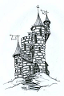

26
Un long chemin sinueux me mène aux abords de cette étrange tour. Un escalier abrupte permet d'atteindre la porte peinte en noir avec de nombreux symboles que je ne comprend pas. Je grimpe l'escalier et je cogne à la porte. « Allez vous en! Vous n'êtes le bienvenu ici! » Résonne une voix très puissante sortie de nulle part.
|